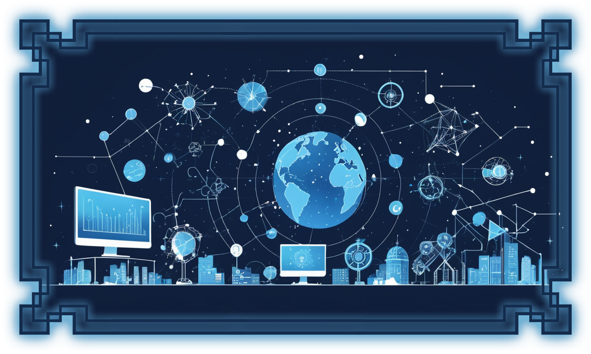

Somos una empresa emergente que se destaca por el uso de tecnologías modernas. Nuestra meta es ofrecer soluciones de
integración y automatización, garantizando que su inversión genere un retorno económico significativo al reducir costos logísticos y
optimizar el tiempo de trabajo.
¿ CON QUÉ TIPO DE TECNOLOGÍAS TRABAJAMOS ?
Trabajamos con las principales tecnologías utilizadas en el desarrollo actual, por ejemplo:
Python junto al framework Django.

NUESTRA FORMA DE TRABAJAR
Para el desarrollo de su proyecto, utilizaremos metodologías ágiles junto con algunas prácticas de
Scrum. Pero, ¿qué significa esto? Básicamente, son formas de trabajo que nos permitirán diseñar un producto que se ajuste a sus
necesidades y expectativas. Nos enfocaremos tanto en la interfaz del frontend (lo que el usuario ve) como en la funcionalidad
final dentro del backend.
 NITWORKS
NITWORKS